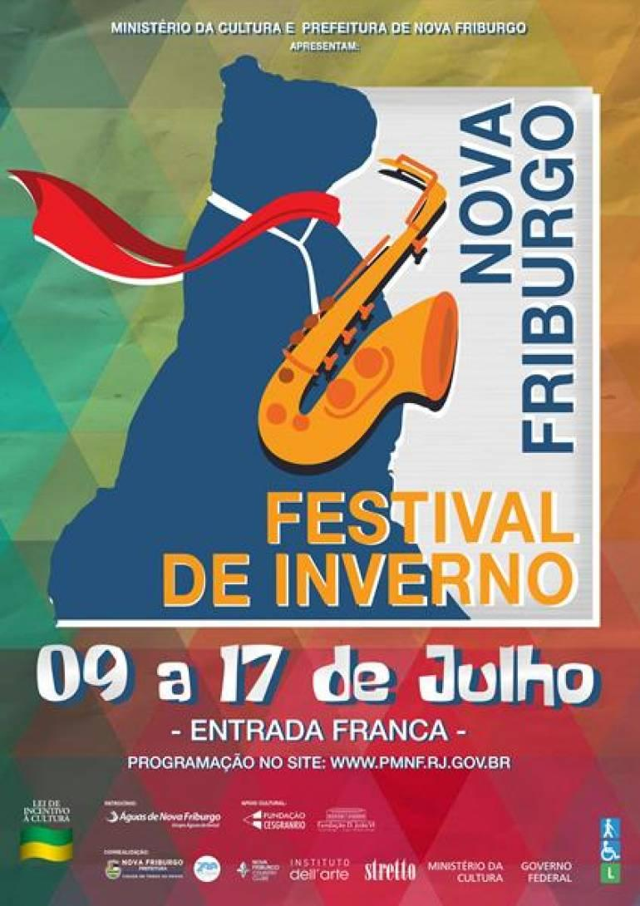
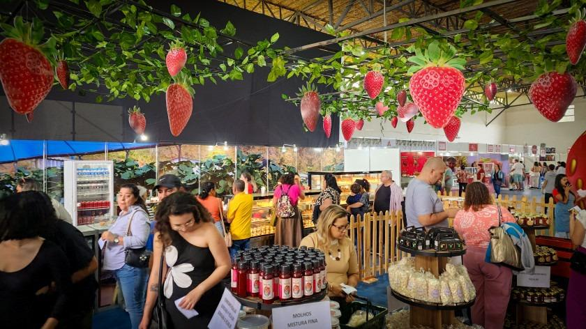
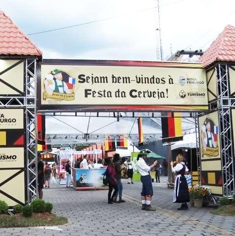

Cultura e diversão durante todo o ano
Nova Friburgo possui uma programação que mistura música, gastronomia, cultura, festas tradicionais e atividades para diferentes públicos. O calendário municipal reúne eventos ao longo de vários meses.

Festival de Inverno
Em 2026, o Festival Nova Friburgo – Edição Inverno aconteceu de 31 de julho a 21 de agosto, com 66 atividades gratuitas distribuídas por cinco espaços culturais da cidade, incluindo música, teatro, dança e exposições.
Julho e agosto

Festa do Morango
Um dos eventos previstos para 2026 acontece de 8 a 12 de outubro, no Nova Friburgo Country Clube, reunindo gastronomia e atrações relacionadas à produção de flores da região..
8 a 12 de outubro

Festa da Cerveja
Outro evento gastronômico previsto no calendário de 2026 é a Festa da Cerveja, programada para 23 a 26 de outubro
23 a 26 de outubro